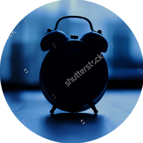
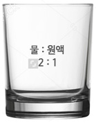
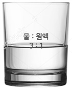
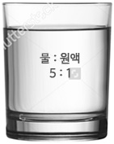

HOME > 복용방법 > 복용방법
복용방법
발효원액 드시는 방법을 알려드립니다.
- 아침기상 후 공복시
- 지친몸을 회복하기 위해 아침에 일어나자마자 공복에 보충해주세요.
- 위장장애가 있는 경우 아침식사 후 1시간정도 지난다음 음용해야합니다.

- 점심식사 30분후
- 활동량이 많은 점심 시간대는 신진대사 및 소화효소가 많이 소모되므로 점심
- 식사 하신 후 드시는게 발효액을 보충해주는 것이 좋습니다. 식사를 하지않는
- 경우는 식사시간을 기준으로 드셔도 좋습니다. 가급적 다량의 물을 희석하여
- 공복감이 해소되도록 드시는게 좋습니다.
- 저녁식사 1시간전
- 오후에 지친몸을 추스르기 위해 저녁식사전에 한 잔을 보충해줍니다.
- 몸에 활력을 주기 위해서는 취침전과 아침에 마시는 것 만으로도 충분합니다.
- 그러나 만성적인 피로에 시달리거나 건강상태를 개선해야 할 때에는 취침전,
- 아침, 점심,저녁 1일 4회정도 섭취하는 것이 좋습니다.
-

- 취침 1시간전
- 밤에 잠을 자는 동안 낮 동안 활동하면서 사용하던 효소를 생산하지 않아도
- 되지만 잠자는 시간동안 인체를 정비하고 재충전하는데 많은 효소가 필요합니다.
- 취침 전에 효소음료를 마시면 효소수가 수행하는 정비 역할을 하게 되므로 많은
- 도움이 됩니다.
'발효 원액' 제대로 알고 마셔요.
- 발효 원액과 생수를 희석해서 하루에3~4회 정도로 되도록 공복에 마시도록 하고 장기적으로 마시는 것이 좋습니다.
- 5% 정도는 가슴이 울렁거리거나 속이 답답하다거나 약간의 발진과 설사를 할 수 도 있습니다.
- 병세가 일시적으로 좀 나빠진다는 등의 반응이 나타나는 사람도 있으나 명현현상의 하나로 이런 분들은 공복을 피하거나
- 3~4일간 다소 음용량을 조절하면 없어집니다.
취향에 따라 즐기세요.
본 제품은 30ml(1회 제공량) 기준으로 25회에 걸쳐 드실 수 있습니다.

진하게 마시기

맛있게 마시기

가볍게 마시기